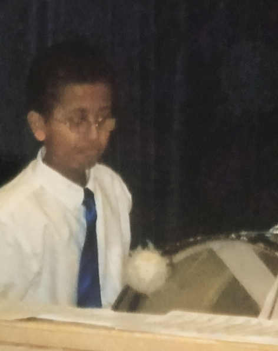

Choir
I had been apart of choir since before middle school and I enjoyed it. Something I really liked about choir was the choir tours that I went on. I was able to travel to many different states and sing with friends for different events. Traveling by bus we would go to different states outside the Midwest.
Below is a photo of me in choir uniform:
Band
The first instrament I ever played was the piano, but I only played it for a year. I wish I continued playing it and I remember my instructor being really good at teaching. I spent more time in band, and I predominantly played percussion related instraments like the snare drum and bass drum.
Below is a photo of me in band playing percussion:
